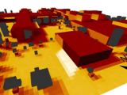
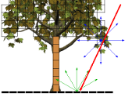

Ph.D. Candidate, Computer Science
University of Minnesota Twin Cities
Resume [pdf] (Updated Feb 2020)
About Me
I am a Ph.D. candidate at the University of Minnesota Twin Cities, advised by
Rahul Narain.
My research interests are physics-based animation, elastic deformation, collision response, and numerical optimization.
During my M.S. I worked on microclimate simulation and radiation transport.
I received my M.S. and B.S. in Computer Science at the
University of Minnesota Duluth. At UMD I was advised by Pete Willemsen
and my thesis was on efficient simulations of urban heat.
Publications
 Bianchi C., Overby M., Willemsen P., Smith A.D., Stoll R., Pardyjak E.R.
"Quantifying effects of the built environment on solar irradiance availability at building rooftops".
Journal of Building Performance Simulation, 2019.
Bianchi C., Overby M., Willemsen P., Smith A.D., Stoll R., Pardyjak E.R.
"Quantifying effects of the built environment on solar irradiance availability at building rooftops".
Journal of Building Performance Simulation, 2019.
Publication Link
George E. Brown, Matthew Overby, Zahra Forootaninia, Rahul Narain.
"Accurate Dissipative Forces in Optimization Integrators".
ACM SIGGRAPH Asia, 2018.
Publication Link
{kind=link}
Jie Li, Gilles Daviet, Rahul Narain, Florence Bertails-Descoubes,
Matthew Overby, George Brown, Laurence Boissieux.
"An Implicit Frictional Contact Solver for Adaptive Cloth Simulation".
ACM SIGGRAPH, 2018.
Project Page
Preprint [pdf]
Matthew Overby, George E. Brown, Jie Li, Rahul Narain.
"ADMM ⊇ Projective Dynamics: Fast Simulation of Hyperelastic Models with Dynamic Constraints".
IEEE TVCG, 2017.
Project Page
Preprint [pdf]
Source Code

Girard P., Nadeau D.F., Pardyjak E.R., Overby M., Willemsen P., Stoll R., Bailey B.N., Parlange M.B.
"Evaluation of the QUIC-URB wind solver and QESRadiant radiation-transfer model using a dense array of urban meteorological observations".
Urban Climate, 2017.
Publication Link
Narain R., Overby M., Brown G.E.
"ADMM ⊇ Projective Dynamics: Fast Simulation of General Constitutive Models".
ACM SIGGRAPH/Eurographics SCA, 2016.
Project Page
Preprint [pdf]
Source Code
Overby M., Willemsen P., Bailey B.N., Halverson S., Pardyjak E.R.
"A rapid and scalable radiation transfer model for complex urban domains".
Urban Climate, 2016.
Preprint [pdf]
Publication Link

Bailey B.N., Overby M., Willemsen P., Pardyjak E.R., Mahaffee W.F., Stoll R.
"A scalable plant-resolving radiative transfer model based on optimized GPU ray tracing".
Agricultural Forest Meteorology, 2014.
Publication Link